Manual de Usuario
Sistema de Gestión Académica CREAR — Academia de Danzas
Directora
Acceso completo: configuración, sueldos, reportes y todo el resto del sistema.
Secretaria
Gestión diaria: alumnas, inscripciones, cobros y asistencia — sin configuración ni sueldos.
Profesora
Su propia ficha, asistencia de sus comisiones, y carga de notas de Profesorado.
El Panel de Inicio
Tu resumen del día apenas entrás al sistema
Todos los rolesAl iniciar sesión, ves un resumen general: cuántas alumnas hay activas, inscripciones del mes, cuotas vencidas que necesitan seguimiento, y lo cobrado hasta el momento.
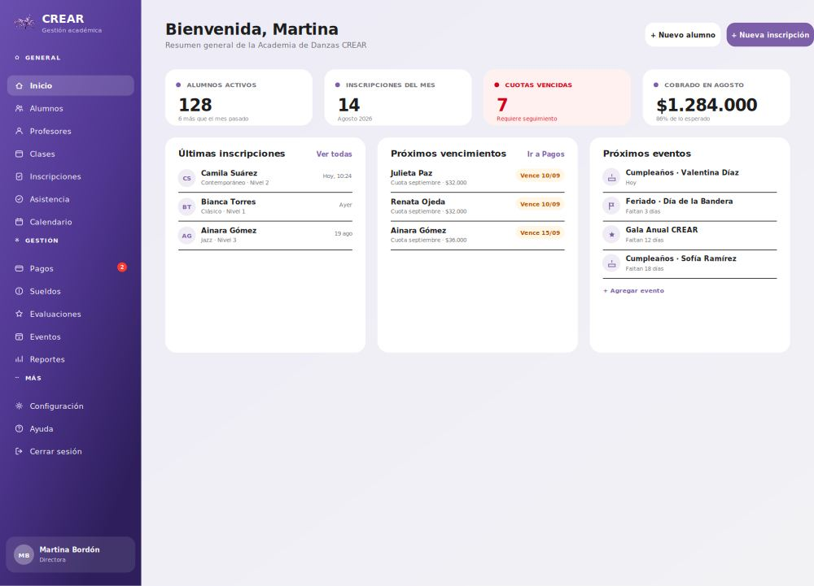
Por qué algunas tarjetas son de color y otras no
El sistema usa el color a propósito: las tarjetas blancas son solo información (no requieren nada de vos). Si una tarjeta aparece en rojo, amarillo o algún otro color de alerta, significa que ese dato necesita tu atención.
Gestión de Alumnas
Alta, edición y ficha completa de cada alumna
Directora y SecretariaCargar una alumna nueva
- Andá a Alumnos en el menú lateral.
- Tocá + Nuevo alumno, arriba a la derecha.
- Completá los datos obligatorios (marcados con *): nombre, apellido, DNI, fecha de nacimiento, teléfono, email, adulto responsable.
- Si tiene hermanas ya inscriptas, buscalas en Grupo familiar para aplicar el 10% de descuento automáticamente.
- Tocá Guardar alumno.
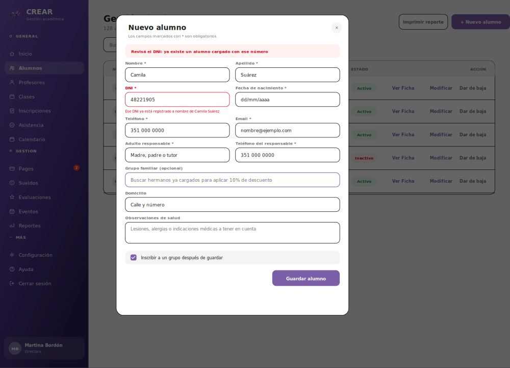
Ver y buscar alumnas
La tabla principal te deja buscar por nombre o DNI, y filtrar por grupo o estado (activas/inactivas). Cada fila tiene 3 acciones: Ver Ficha (toda la información en detalle), Modificar (edición rápida) y Dar de baja (baja lógica, nunca se borra el historial).
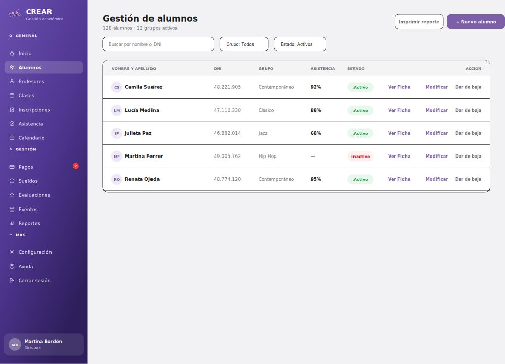
Ficha Médica
Datos de salud a mano ante cualquier emergencia
Directora y Secretaria- Desde Alumnos, tocá Ver Ficha en la fila de la alumna.
- Andá a la tab Ficha Médica.
- Si es la primera vez, vas a ver el botón + Agregar Ficha Médica — tocalo para cargar los datos.
- Completá grupo sanguíneo, alergias, medicación, obra social, vencimiento del apto físico y contacto de emergencia.
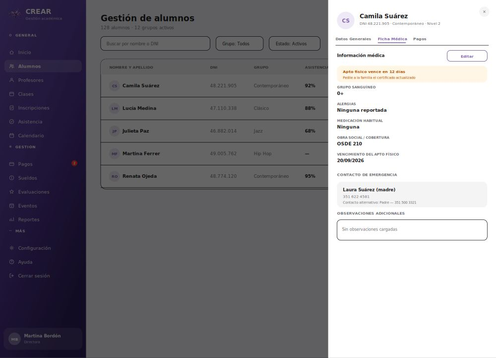
Profesores
Plantel docente, especialidades y disponibilidad
Directora y SecretariaLa tabla de Profesores muestra el plantel completo con sus especialidades, años de experiencia y estado (disponible o en licencia). Tocá Ver Ficha 360° para acceder a toda su información.
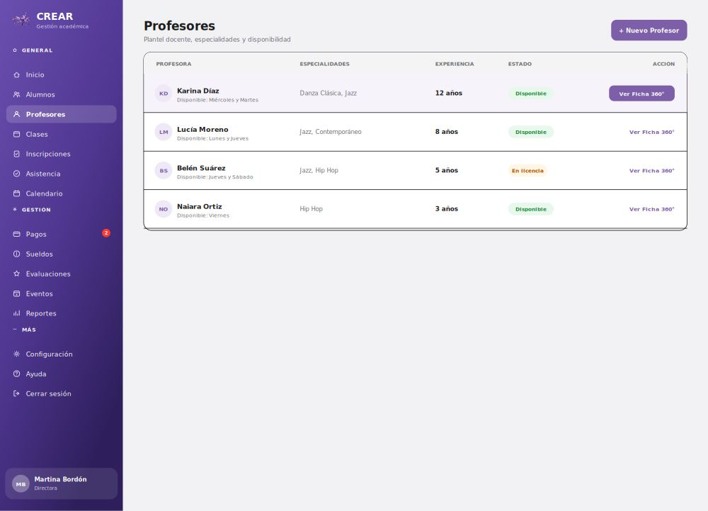
La Ficha 360° tiene 5 tabs
| Tab | Qué encontrás |
|---|---|
| Info Básica | Datos de contacto, fecha de nacimiento, foto |
| Perfil Profesional | Estudios, especialidades, biografía |
| Datos Admin. | Sueldo, contratación — solo visible para Directora |
| Licencias | Calendario de ausencias y búsqueda de suplentes |
| Coreografías | Historial de coreografías dirigidas por evento |
Licencias y Suplencias
Cuando una profesora falta, el sistema busca reemplazo solo
Directora y Secretaria- Entrá a la Ficha 360° de la profesora → tab Licencias.
- Tocá + Marcar Licencia.
- Elegí las fechas y el motivo (examen, viaje, enfermedad, otro).
- El sistema detecta solo qué comisiones se ven afectadas.
- Activá Buscar suplente automáticamente por WhatsApp para que se les consulte a otras profesoras disponibles.
- Vas a ver el estado Buscando reemplazo... hasta que alguien confirme por WhatsApp.
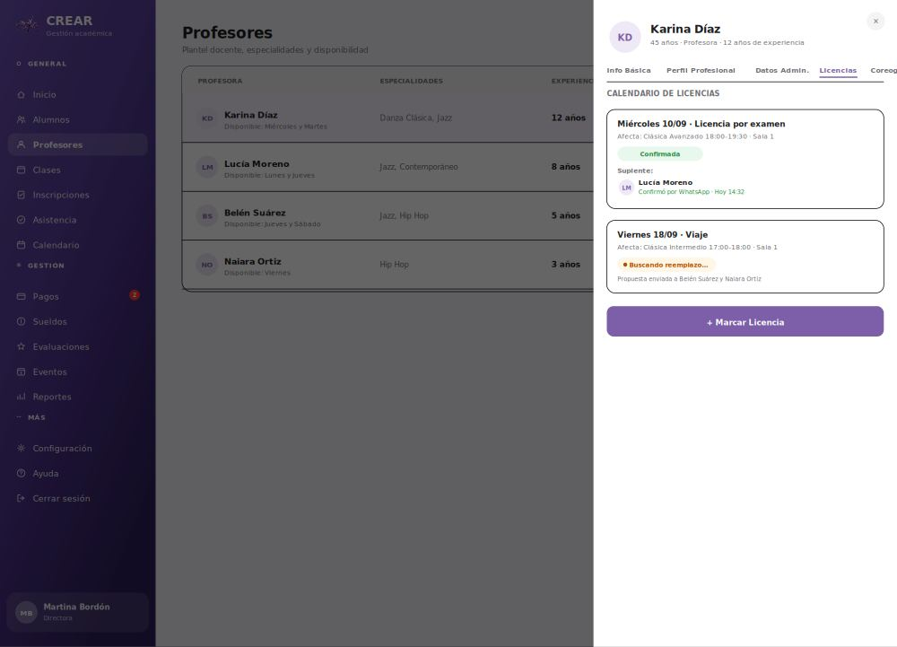
Clases y Comisiones
La oferta académica de la academia
Directora y SecretariaCada comisión combina una disciplina, un horario, una sala y una profesora. El cupo máximo institucional es de 25 alumnas por comisión.
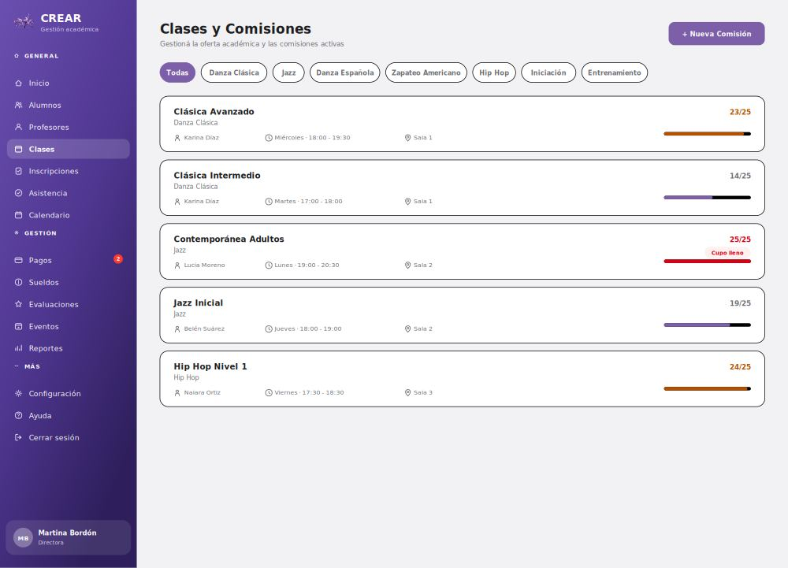
Leer la barra de cupo
| Color | Qué significa |
|---|---|
| Violeta | Cupo normal, hay lugar disponible |
| Amarillo | Quedan pocos lugares (80% o más ocupado) |
| Rojo + etiqueta "Cupo lleno" | Comisión completa — las nuevas inscripciones van a Lista de Espera |
Ver el detalle de una comisión
Tocá el nombre de cualquier comisión para ver un resumen completo: cuántas alumnas están inscriptas, el % de asistencia promedio, lo que factura por mes, y el listado completo de alumnas con su estado de pago.
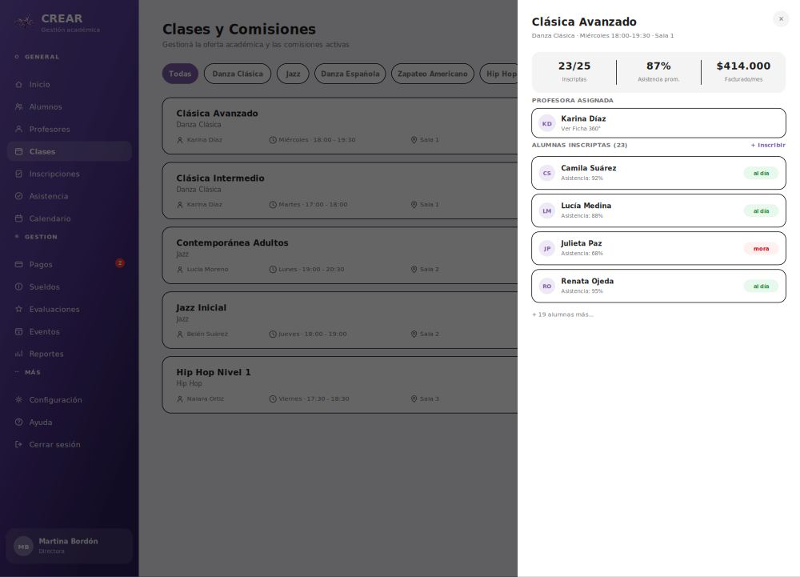
Inscripciones
Anotar alumnas ya cargadas a una comisión
Directora y Secretaria- Tocá + Nueva inscripción.
- Elegí la alumna (ya tiene que estar cargada en Alumnos).
- Elegí la comisión.
- Si hay cupo, la inscripción queda Confirmada.
- Si no hay cupo, el sistema te ofrece anotarla en Lista de Espera — se le avisa por WhatsApp automáticamente apenas se libera un lugar.
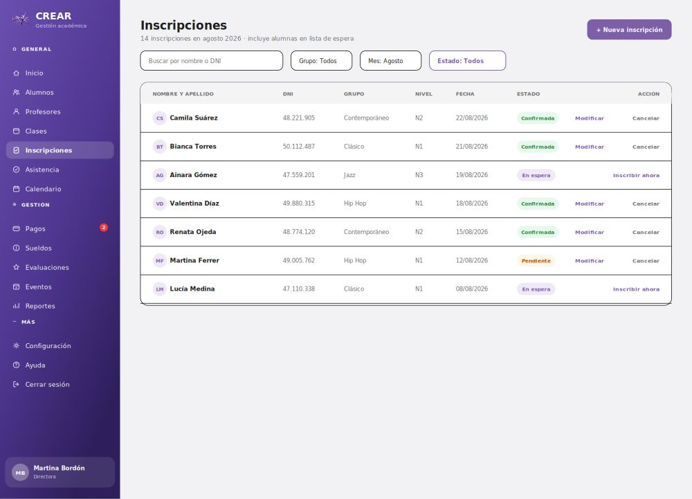
Asistencia
Pasar lista, comisión por comisión
Todos los roles- Elegí la Comisión y la Fecha arriba de todo.
- Tocá cada interruptor para marcar Presente / Ausente.
- Tocá Guardar Asistencia al terminar.
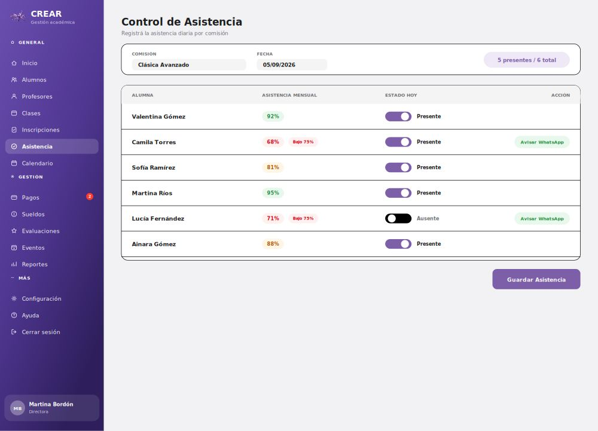
Pagos y Cuotas
Cuenta corriente de cada alumna
Directora y SecretariaLa mayoría de los pagos llegan directo desde la PWA de las familias (Mercado Pago) y el estado se actualiza solo, sin que cargues nada. El panel de "Registrar Pago Manual" es solo para efectivo o transferencia.
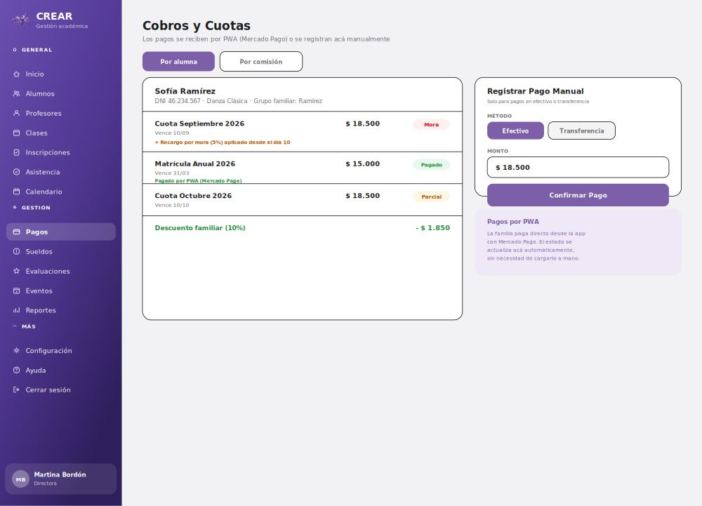
- Buscá a la alumna (o cambiá a la vista Por comisión para ver el total de una comisión entera).
- Si el pago fue en efectivo o transferencia, completá el monto y método en el panel de la derecha.
- Tocá Confirmar Pago.
Sueldos
Liquidación mensual del personal
Solo Directora- Tocá Generar del Mes — el sistema crea una fila de liquidación por cada persona, con estado "Pendiente".
- Revisá los montos (toman el sueldo base configurado por persona).
- Tocá Aprobar Liquidación cuando esté todo correcto.
- Una vez pagada, marcala como Pagada.
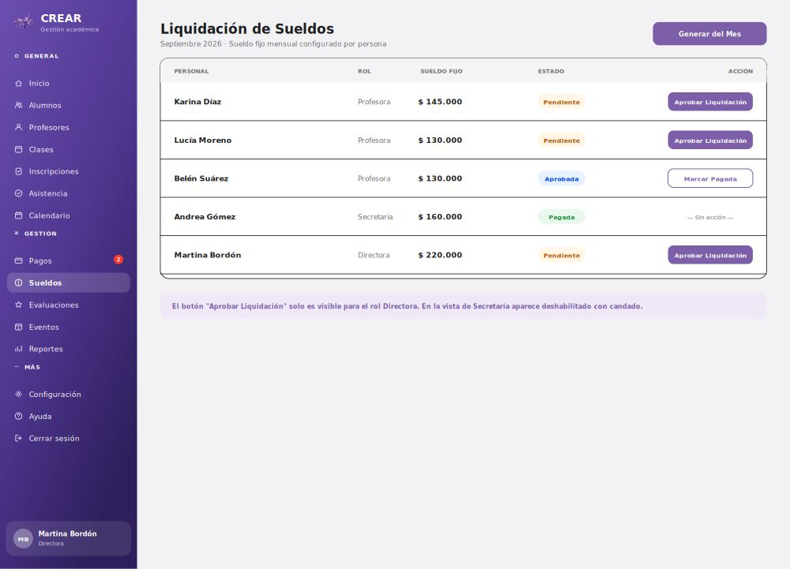
Evaluaciones
Notas de Profesorado — Expresión, Ritmo y Técnica
Todos los rolesSolo se cargan notas para las disciplinas de Profesorado (Danza Clásica, Jazz, Zapateo Americano, Danza Española). Las clases recreativas no tienen evaluación formal.
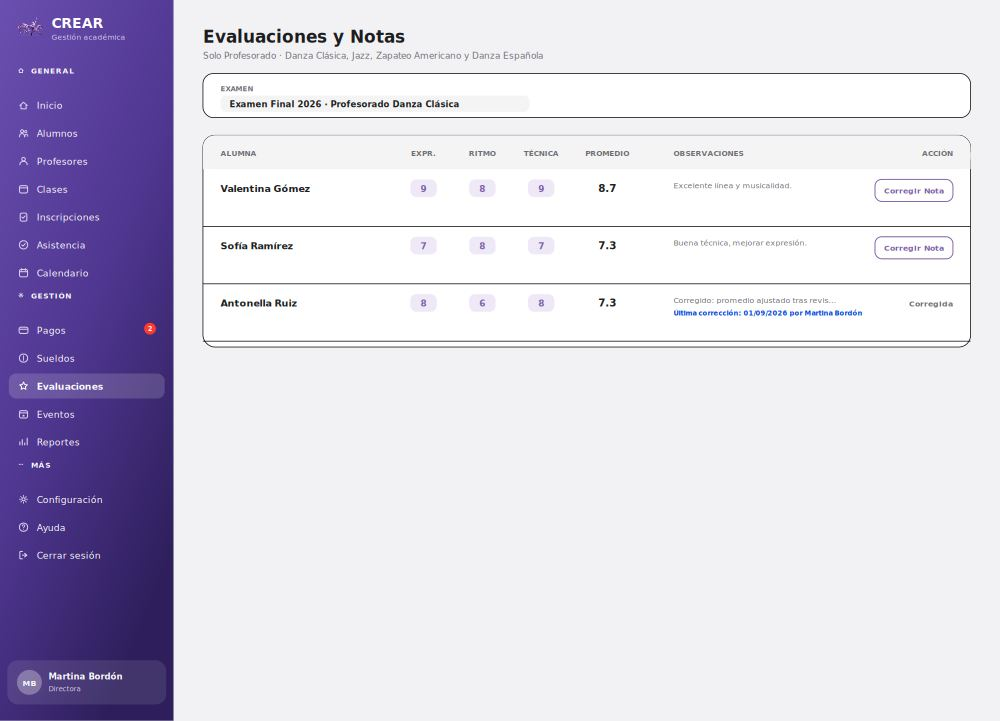
- Elegí el examen arriba de todo.
- Cargá la nota de cada alumna en Expresión, Ritmo y Técnica (escala 1 a 10).
- El promedio se calcula solo.
- Si necesitás corregir una nota ya cargada, tocá Corregir Nota — queda un registro de quién corrigió y cuándo.
Eventos
Muestras, festivales y la organización del show de fin de año
Directora y Secretaria- Tocá + Nuevo Evento para crear una muestra, festival o examen.
- Si activás Habilitar cronograma, vas a poder organizar las coreografías en tandas.
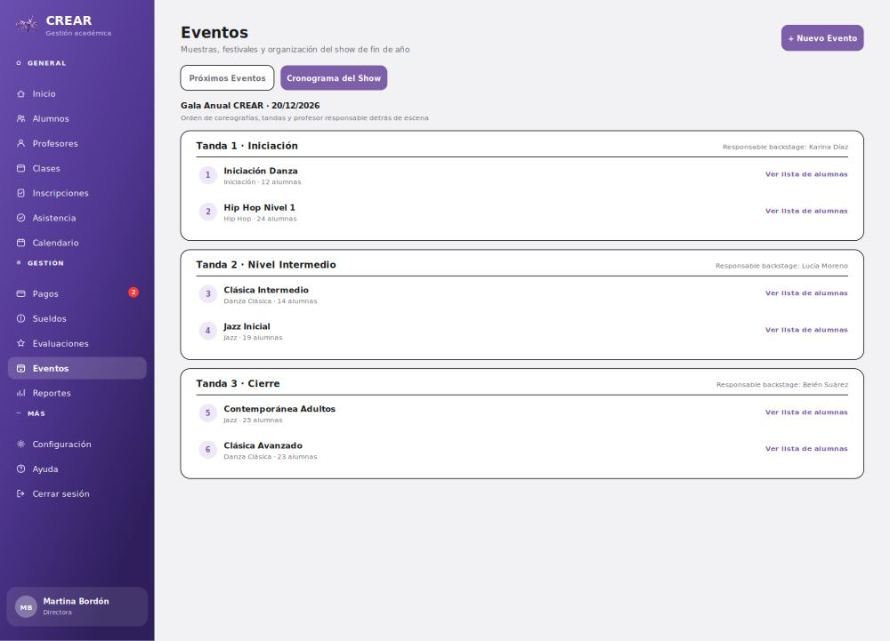
Cronograma por tandas
Cada tanda tiene un profesor responsable de backstage y su lista de coreografías, con el número de alumnas de cada una. Tocá Ver lista de alumnas para ver quién participa en cada coreografía puntual.
Calendario
Clases, eventos, cumpleaños y licencias en un solo lugar
Todos los rolesEl calendario mensual combina automáticamente todo lo que ya cargaste en otros módulos — no hace falta cargar nada acá directamente.
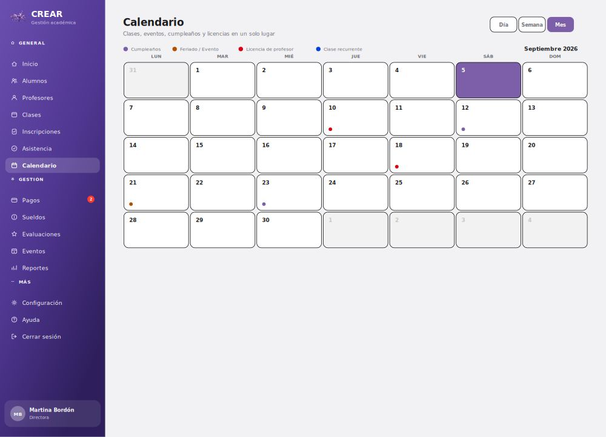
- Tocá cualquier día para ver el detalle de lo que pasa esa fecha.
- Usá los botones Día / Semana / Mes arriba a la derecha para cambiar la vista.
Reportes
Morosidad y ocupación de un vistazo
Solo Directora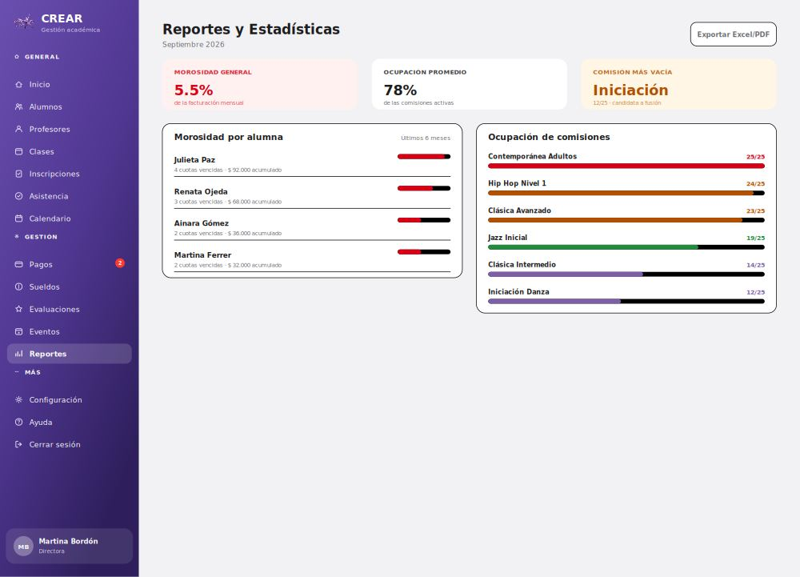
Dos reportes principales: morosidad por alumna (quiénes tienen cuotas vencidas acumuladas) y ocupación de comisiones (qué tan llenas están, para decidir si conviene fusionar grupos chicos). Podés exportar todo a Excel o PDF con el botón de arriba.
Notificaciones
Todo lo que necesita tu atención, en un solo lugar
Todos los roles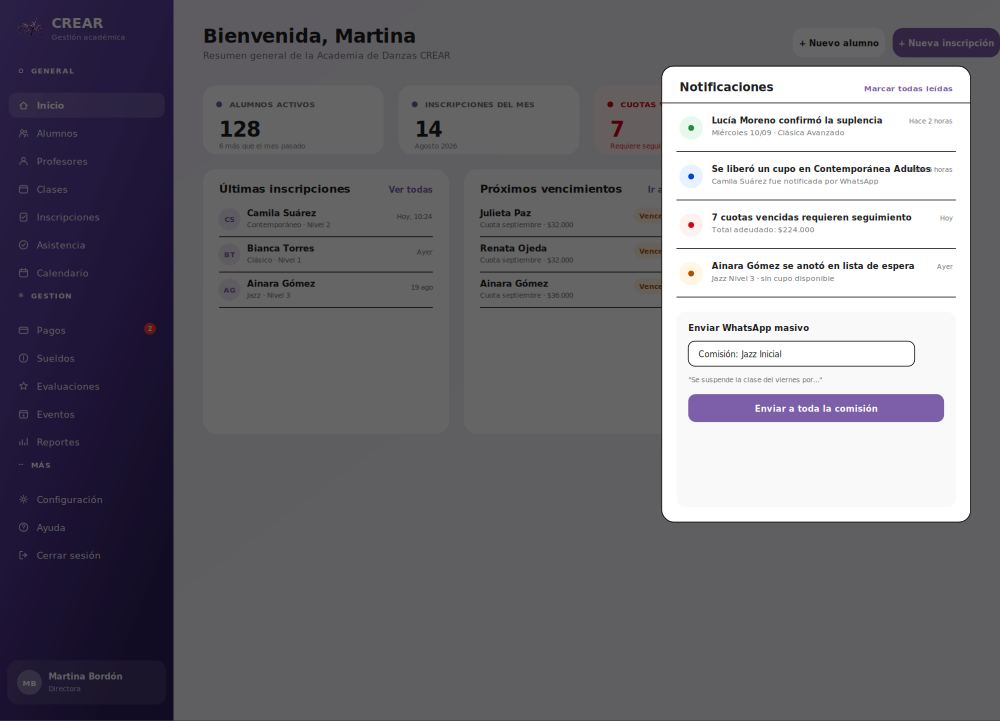
Cada notificación te lleva directo a la pantalla correspondiente al tocarla — una suplencia confirmada te lleva a la Ficha del Profesor, una cuota vencida te lleva a Cobros.
WhatsApp masivo
Desde el mismo panel podés mandar un aviso a todas las familias de una comisión a la vez (por ejemplo, avisar que se suspende una clase).
Configuración
El panel de control de toda la academia
Solo Directora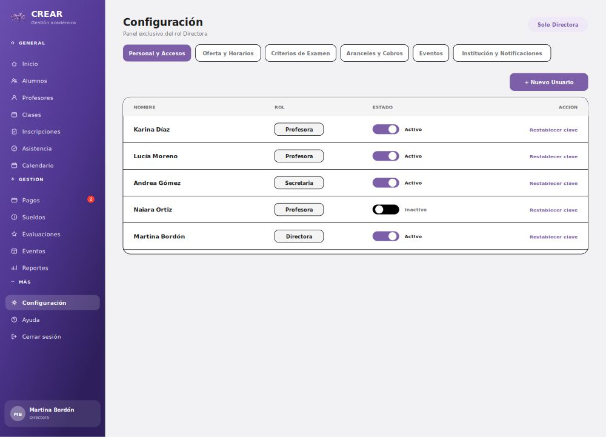
| Tab | Para qué sirve |
|---|---|
| Personal y Accesos | Crear usuarios nuevos, restablecer claves, activar/desactivar personal |
| Oferta y Horarios | Catálogo de disciplinas que ofrece la academia |
| Criterios de Examen | Los criterios que se usan al cargar notas (Expresión, Ritmo, Técnica) |
| Aranceles y Cobros | Cuota base, matrícula, % de mora y de descuento familiar |
| Eventos | Redirige a Eventos — se gestiona ahí para no duplicar datos |
| Institución y Notificaciones | Datos de la academia, integraciones (WhatsApp, Mercado Pago), avisos automáticos |
Preguntas Frecuentes
Dudas comunes del uso diario